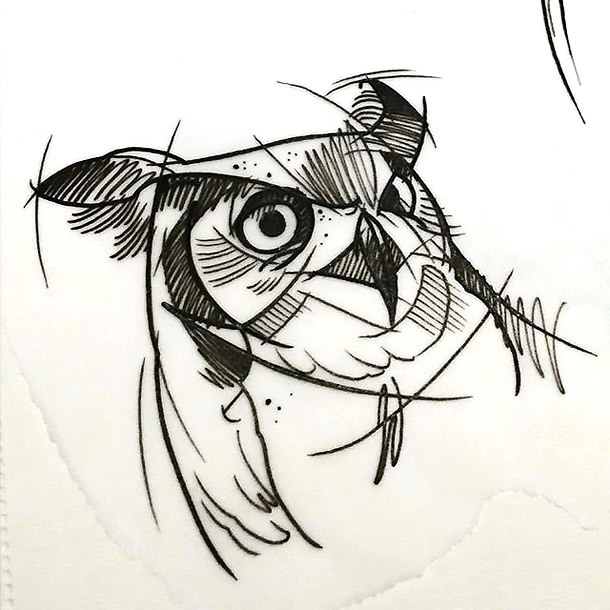
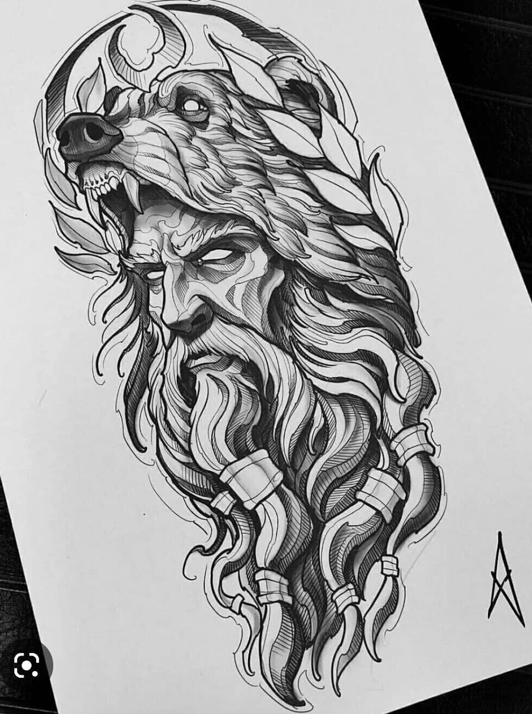
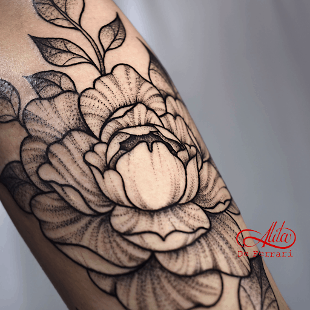
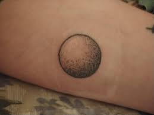
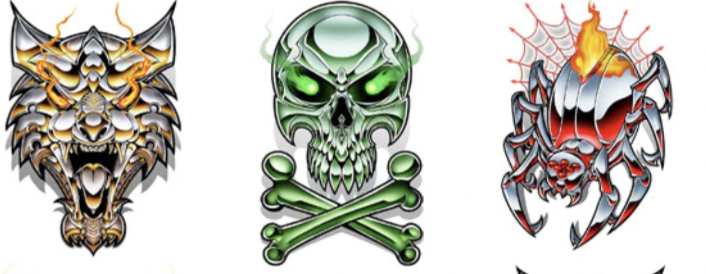
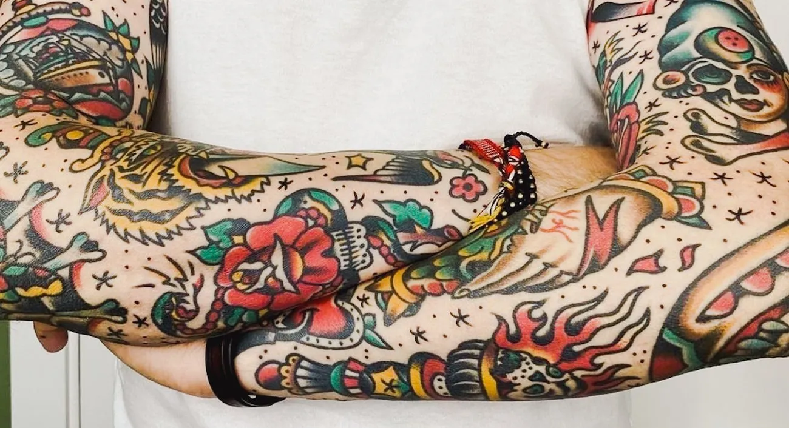
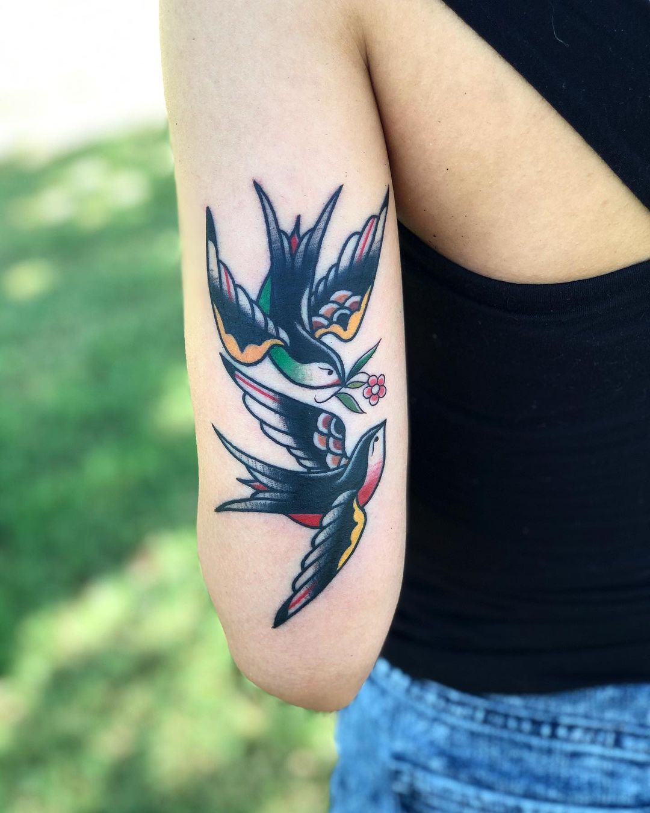

In this project, we will explore non-photorealistic rendering to create a tool for tattoo artists to easily generate designs in different tattoo styles. By altering how light is rendered in a typical photorealistic manner we have learned in class, we will create more expressive and artistic images in a sketch, stick & poke, chrome, and american traditional tattoo styles.
After a recent binge of the popular series Ink Master, in which tattoo artists are challenged on both their creativity and their technical skills, we recognize the difficulty of exploring different styles. Depending on an artist's creation, one thing that may really help is developing the skill to ink different styles, but creating stencils takes a lot of time and energy that artists may not have. By creating a texture pack in which artists can easily switch through different styles, we are offering a great resource that practicing tattoo artists can utilize. We’re hoping to solve it by giving a user-friendly interface that will allow a user to easily switch the style of an image. To create the difference in our textures, we can customize the textures, lighting and meshes of the images to create a handful of different styles!
How might we use digital rendering to make tattoo art more easily?
Our goal is to create a tool that allows users to switch between four different rendering styles: sketch, stick & poke, chrome, and American traditional.
|

|

|
|

|

|
|

|
|

|

|
Measuring Quality
We will measure the quality of our tool examining the rendering results on a variety of images with different levels of detail. Though it is difficult to quantify how successful our model is in terms of accurately representing the different tattoo styles, visual examination should allow us to determine the relative success of our rendering tool.
Aspirational Deliverables
1. Adding customization: One way we would improve our tool if we have time is to give the user options to customize the styles we have already implemented. For example, we could allow the user to set different levels of line weights for the sketch style. We could also give the user the option to include an outline or not for the stick and poke style.
2. Implementing additional styles: If we had more time, we could also implement additional tattoo styles, including new school tattoos, watercolor, painting, realism, etc.
WEEK 1 (4/10-4/16)
WEEK 2 (4/17-4/23)
WEEK 3 (4/24-4/30)
WEEK 4 (5/1-5/4)
We will be using our original physical-based renderer that uses path tracing algorithms as a starting codebase and make modifications moving forth. All platforms, hardware, and software resources will remain the same as our previous projects, especially project 3. This means we will mainly be building on top of the CGL Vector Library and OpenGL to maintain functionality and visibility of our graphics. All project members have Apple M1 Macs, which to our understanding uses the M1 8-core GPU. We’ll be heavily taking reference to different types of NPR, including Pen and Ink Illustrations and Painterly Rendering, to produce tattoo-esque designs from object inputs.
Here are some initial material to help accelerate our understanding of utilizing these rendering techniques: